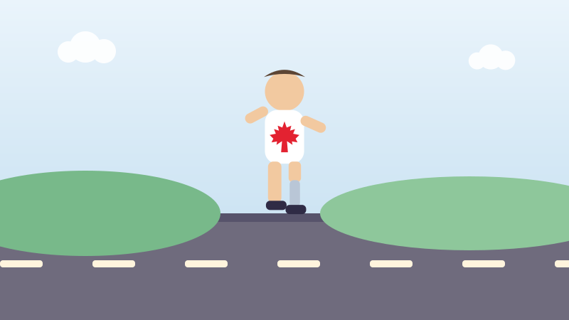

🏃 Pour les enfants
Terry Fox et la plus longue course du Canada
Il a couru presque un marathon chaque jour, 143 jours de suite.

Terry Fox était un jeune homme de la Colombie-Britannique qui adorait le sport. À dix-huit ans, il est tombé gravement malade et les médecins ont dû lui retirer une partie d'une jambe. On lui a donné une jambe artificielle pour marcher.
À l'hôpital, il a rencontré d'autres personnes malades, dont des enfants. Il a décidé de faire quelque chose d'énorme pour les aider. Il a décidé de traverser tout le Canada en courant et de demander de l'argent pour la recherche sur le cancer.
Il l'a appelée le Marathon de l'espoir. Le 12 avril 1980, il s'est tenu sur la plage de St. John's, à Terre-Neuve, a trempé sa jambe artificielle dans l'océan Atlantique et s'est mis à courir vers l'ouest. Il avait vingt et un ans.
Il courait environ 42 kilomètres par jour. C'est un marathon complet, chaque jour, sous la pluie, dans le vent et la chaleur, sur une jambe de métal qui lui faisait mal.
Au début, presque personne ne le remarquait. Puis les gens ont commencé à sortir au bord de la route pour l'applaudir. Des villes entières venaient. Il a couru 143 jours et parcouru 5 373 kilomètres, plus de la moitié du pays.
Le 1er septembre 1980, près de Thunder Bay en Ontario, sa maladie est revenue et il a dû s'arrêter. Il est mort l'été suivant, à vingt-deux ans. Il n'a jamais terminé sa course, et cela n'a jamais eu d'importance.
Chaque septembre, des écoles et des villes partout au Canada organisent une Course Terry Fox. Ensemble, elles ont amassé plus de 800 millions de dollars, et le total augmente chaque année.
Essaie maintenant trois questions
Pas de chronomètre et aucune note à craindre. Chaque réponse t'explique pourquoi.
← Toutes les histoires pour enfants
À propos de ce quiz
Cette histoire raconte comment Terry Fox a parcouru 5 373 kilomètres à travers le Canada en 1980, presque un marathon par jour pendant 143 jours, pour amasser de l'argent pour la recherche sur le cancer.
Elle est écrite en phrases courtes pour les enfants de six à neuf ans, avec une image dessinée pour ce site et trois questions à la fin. Touchez le bouton de lecture à voix haute et la page lira les questions à haute voix.
À découvrir aussi
D'autres histoires vraies du Canada pour les enfants